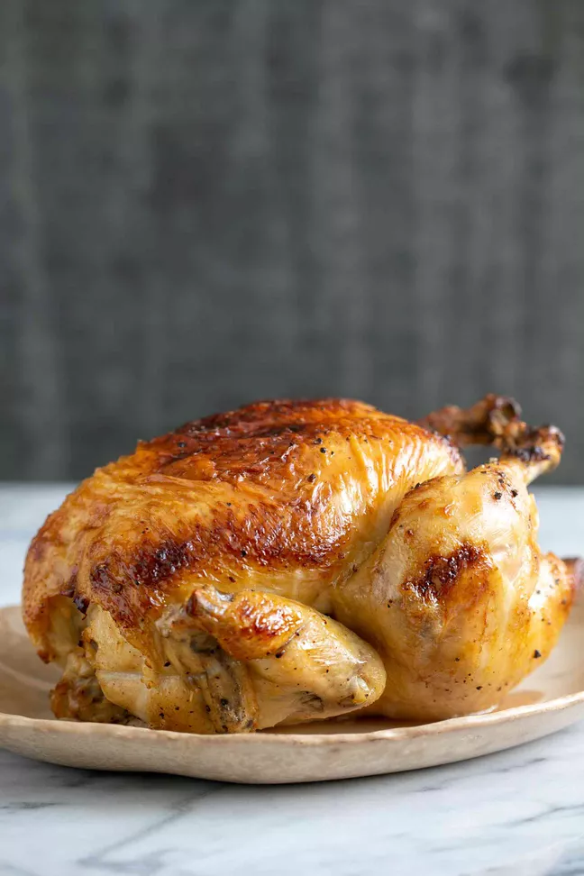

Juicy Roast Chicken

Image from https://www.simplyrecipes.com/recipes/honey_glazed_lemon_roast_chicken/
Description
Roast chicken is a great simple recipe that tastes good and has a lot of volume.
Ingredients
- 3 Pound whole chicken. Giblets removed
- Salt and pepper
- 1 tablespooon onion
- 1/2 cup margarine divided
- 1 stalk celery with removed leaves
Directions
- Preheat oven to 350 degree F (175 degrees C)
- Place chicken in roasting pan, season generously inside and out with salt, pepper, onion powder.
3 table spoons margarain in chicken cavity. Arrange dollops of the remaining margainr around the chicken's exteriod
Cut the celery into 3 or 4 pieces and place in cavity.
- Back chicken uncovered in the preheated oven until no longer pink at the bone and the juices run clear (about 1.25 hours).
Instant-read thermometer inserted into the thickest part of the thigh should read 180 Degrees F (82 degrees C).
Remove chicken from heat and baste with melte dmargarine and dirppings. Cover with aluminum foil and allow to rest 30 mins before serving